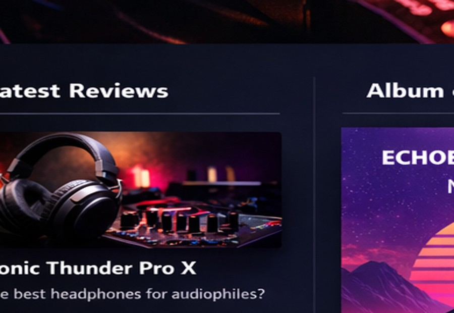

Gear Review
Studio headphones that tell the truth
Not every pair deserves your ears. Some are just expensive earmuffs with attitude.
MyAudio Online is a modern mockup for album reviews, studio articles, gear write-ups and blog content. It is built to look good fast, work on GitHub Pages, and help you test the plumbing without building NASA.
Quick sections you can actually test right now.

Not every pair deserves your ears. Some are just expensive earmuffs with attitude.

A sharp write-up format for new releases, old classics, and records that aged strangely.

Practical articles on sound production, arrangement, recording, and fixing sloppy decisions.

Think blog posts, music culture takes, workflow ideas, and the occasional justified rant.
Homepage, reviews, album reviews, articles and blogs. Static HTML. One CSS file. Local images. No database. No weird build tools. Just files you can drop into GitHub and test.
Because sometimes you do not need a digital cathedral. You need a clean test site that proves DNS, repo structure and hosting are behaving themselves.